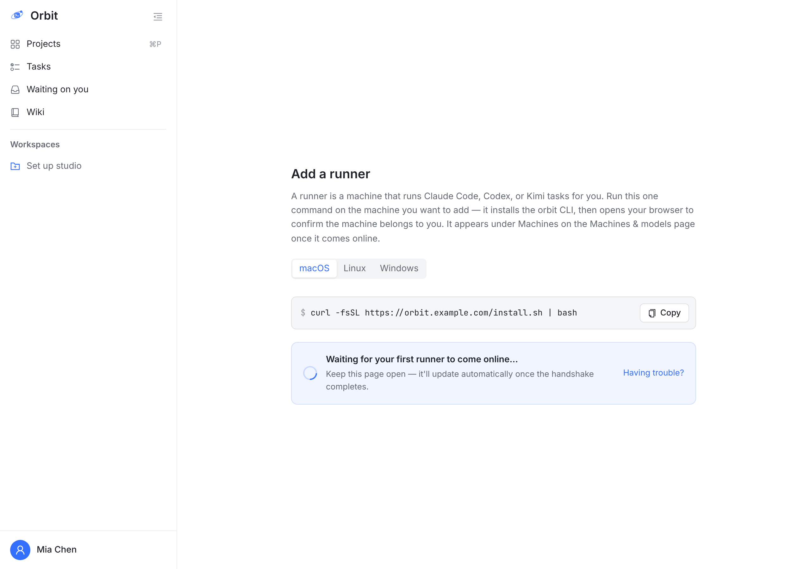
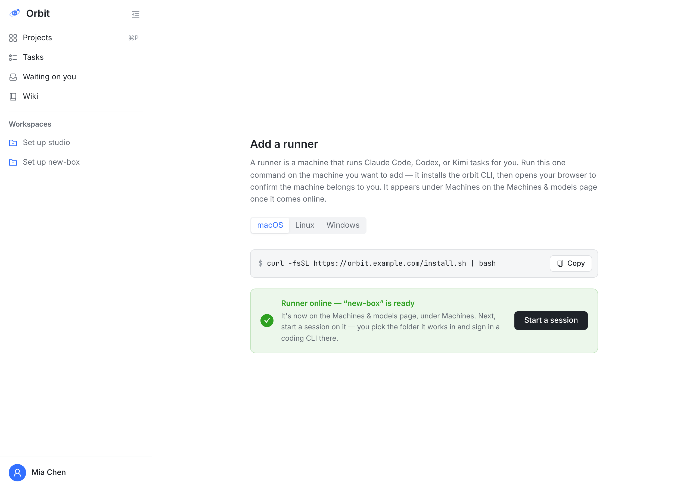
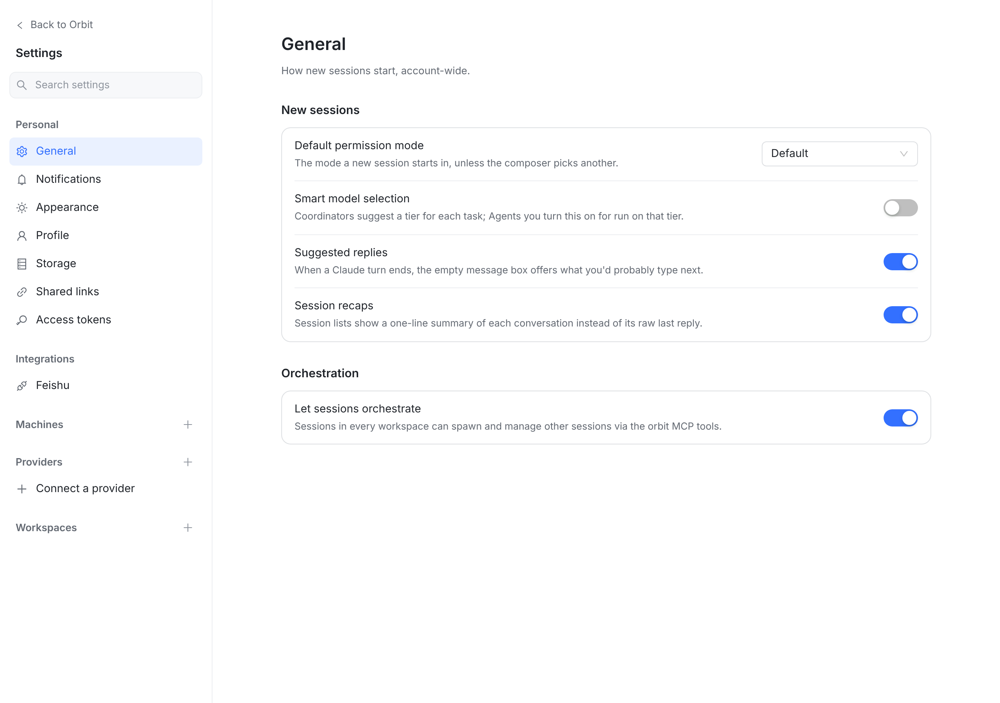
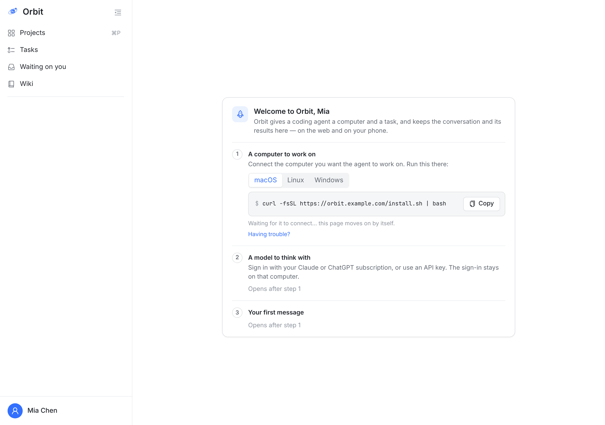

Settings → Machines → ＋ · 今天（真实页面，HEAD 87c394579）
示例账号 Mia（虚构）。窗口 1280×900。Settings 里另外两个 ＋（Providers、Workspaces）都留在 Settings 里；只有 Machines 的 ＋ 跳到 /runners/register，那是主界面的页面。
A. 已有机器的老用户
 1
1→

23→

4B. 新用户（一台机器都没有，服务器没开托管 runner）
 5
5
6
问题
- ＋ 在 Settings 导航里，用户预期“在 Settings 右侧打开一页”，就像 Providers 的 ＋（
/settings/providers/new）和 Workspaces 的 ＋（/settings/workspaces/new）。 - 跳出后左栏换成主界面，回不到 Settings（只能浏览器后退）。原因：
ef640054a（11-12 Settings 独立窗口）时，注册页还是旧的主界面页面，没搬进 Settings。 - 文案还写着 “Machines & models page”——web 上这个页面已经没了，现在是 Settings 左栏的 Machines 组。
- 上线后只能去开会话；想先配这台机器（引擎、并发、工作区）得自己再找回 Settings。
- N1 首次登录走欢迎卡是对的，不该动。
- 空的 Machines 组只有一个小 ＋，新用户很难看出这里能加机器；Providers 组空时会显示一行 “Connect a provider”，两组不一致。